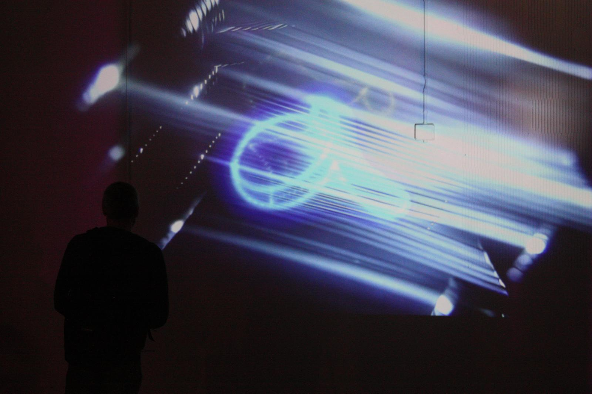
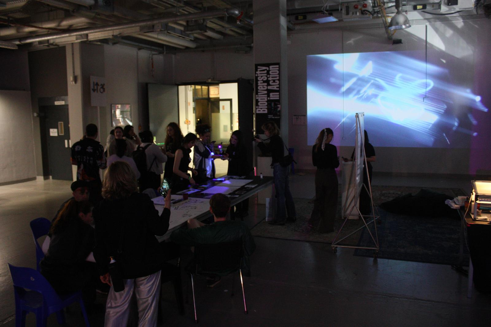
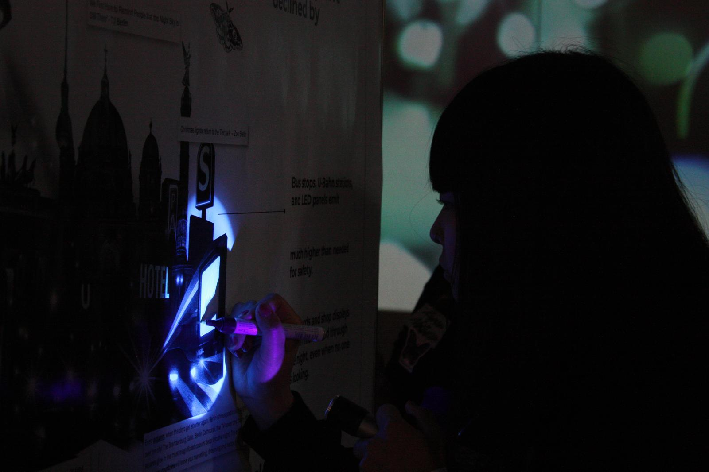
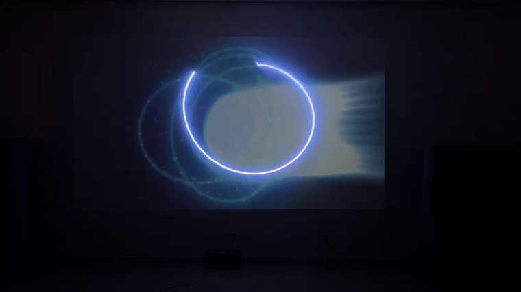
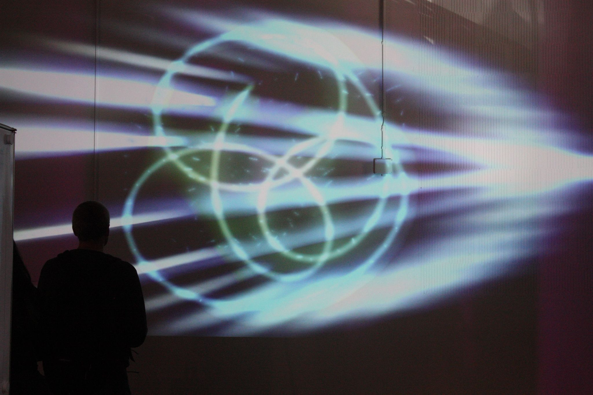
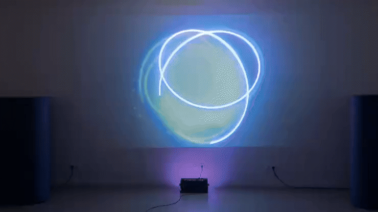

TINCON: re:publica
Funded by the EU in collaboration with DE/MO Foundation and Public Art Lab Berlin.
An immersive audiovisual installation exploring light pollution and its disorienting effects on nocturnal pollinators. Presented at TINCON / re:publica in Berlin, combining ecological research with spatial storytelling through ILDA laser, DMX lighting control, and projection mapping programmed in TouchDesigner.





